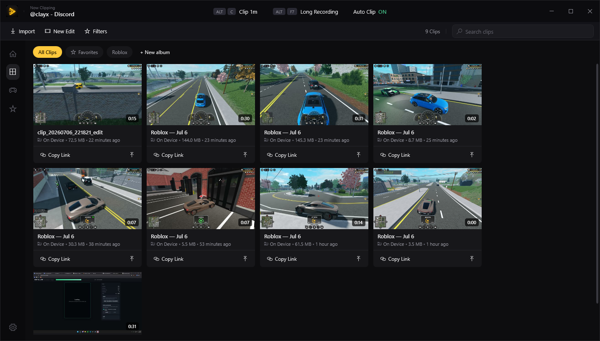
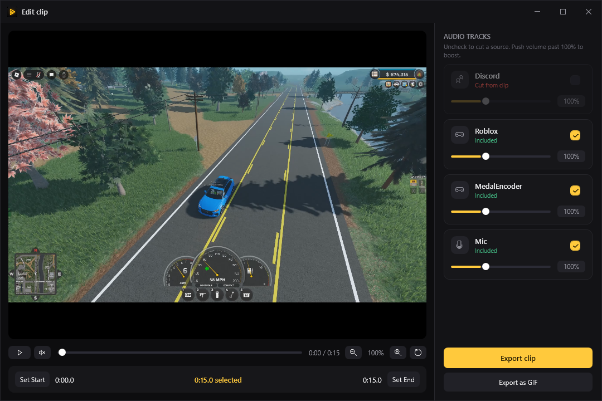
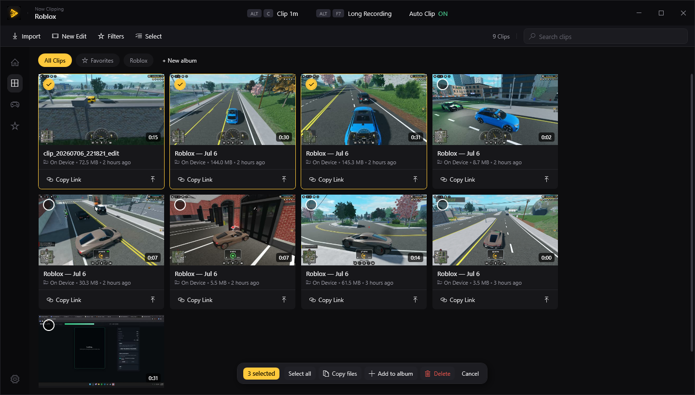
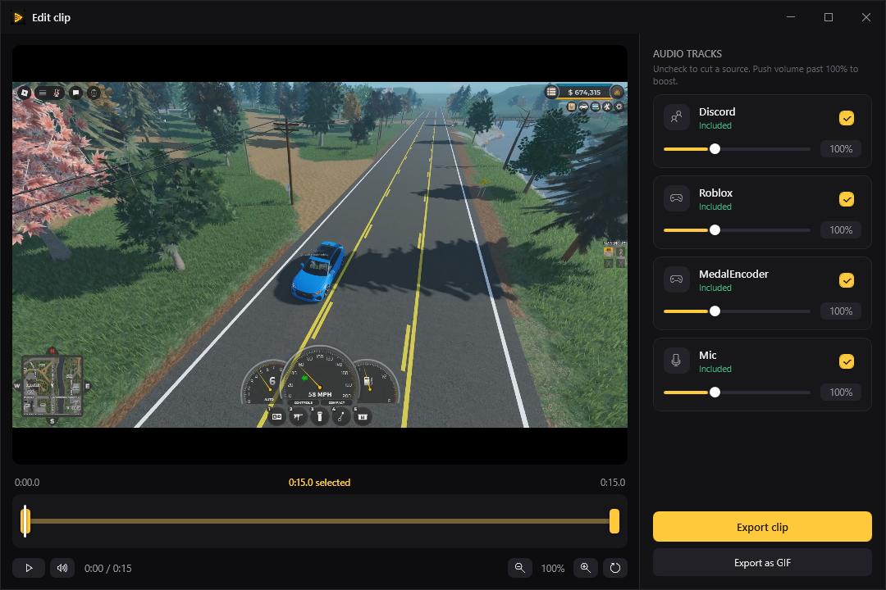
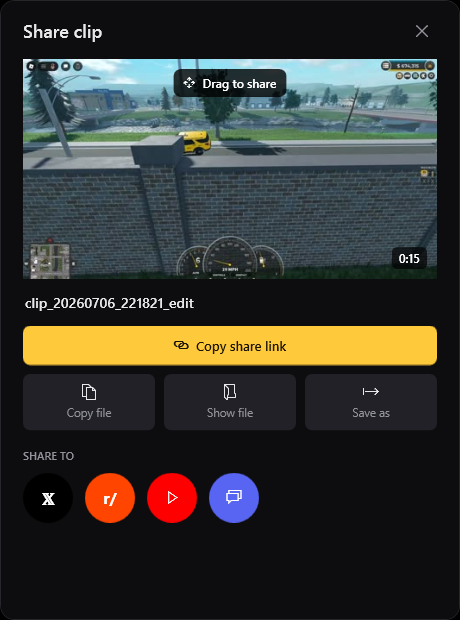

Clyppr records every app's audio on its own track — so your clips keep the game and lose the voice-chat chaos. Always-on replay buffer, a real editor, and drag-to-Discord sharing. Your clips never leave your PC.

Every app you hear gets captured on a separate audio track the moment it's recorded — game, Discord, mic, all split. So in the editor you just untick Discord and the clip keeps the game. No re-recording, no messy audio.

Clyppr keeps a rolling buffer of your last minutes in the background on your GPU. When something happens, hit ALT C and the clip's already saved — ending exactly on now.

Drag the handles on a proper timeline to trim, ride each source's volume on its own fader, zoom into the frame, and export — or drop it straight to a GIF.

Grab the clip and drag it right into any chat, copy the file to paste with Ctrl+V, or save a copy — no upload, no account, nothing leaves your PC unless you send it.

Everything Medal does that matters — without the account, the upsells, or the cloud you don't control.
Download, drop it on your gaming PC, press ALT C. That's the whole setup.
Download Clyppr for Windows